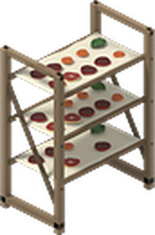


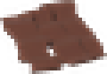

Every vanilla and Butchery cut has a best method and doneness. Take it off at the right moment and it gets a name.
Where it cooks matters
The method comes from the heat you put it on.
Barbecue, campfire, fireplace
Stove or oven
Smoker
Dazed Plumbing's smoker counts
Microwave
it cooks, but it never pleases
Doneness runs from Rare to Burnt
Hover a cut for its "Best:" tip, and watch the doneness change while it cooks.
Eight kinds of cut
Each with its own best method and doneness.

Steak

Roast

Slow

Ribs

Chop

Pork roast

Poultry

Offal
Good food, good mood
A cut cooked right lifts your spirits. A good grade lifts them more.
Method
Doneness
Butchery grade
unhappiness
plus -22.5 boredom and less stress, for a top Prime cut done right
unhappiness
microwaved, burnt, or anything that scores below 0.2

With Dazed Climate
Hot food eaten in the cold warms you up to +6 °C, a dish +8 °C, a hot drink +5 °C
Portion your primals
With Dazed Butchery: right-click a raw primal with a knife.
 ›3
›3Ribeye Steaks
from a Beef Rib
›4Loin Chops
from a Pork Loin
›4Medallions
from a Venison Backstrap
 ›2
›2T-Bone Steaks
Beef Short Loin
 ›3
›3Sirloin Steaks
Beef Sirloin
 ›4
›4Filet Mignon
Beef Tenderloin
 ›3
›3Round Steaks
Beef Round
 ›2
›2Flank Steaks
Beef Flank
 ›3
›3Shoulder Steaks
Pork Shoulder Butt
 ›4
›4Lamb Rib Chops
Mutton Rack
 ›4
›4Lamb Loin Chops
Mutton Loin
 ›3
›3Lamb Leg Steaks
Mutton Leg
 ›3
›3Venison Steaks
Venison Hindquarter
Portions keep the primal's food, age and grade. Thaw a frozen primal first.
The Cooking window
Every dish, pot, stove and rack within reach, in one place.
Cook
every dish, ingredients from nearby fridges, Add to pot, and the hunger and calories it gives
On the Heat
everything cooking within 12 tiles, doneness bars and a burn warning
Recipes
saved named recipes that survive a reload, and what you are missing
Drying
racks and dehydrators near you, the time left, and Collect Ready
Illustration, not a screenshot. Open it with a hotkey you set in Dazed Core's options.
Dry food to last
Put fresh food on a rack and it dries on its own.
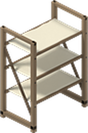
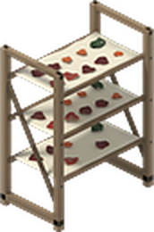
Wooden Drying Rack
Carpentry 2: planks, long sticks, ripped sheets and nails
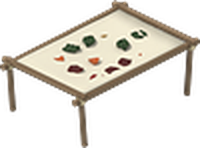
Ground Drying Rack
no skill needed: long sticks, twine and ripped sheets
Food Dehydrator
found in kitchens and stores, runs on the grid, a generator or Dazed Power (500 W). Its hum doesn't draw zombies
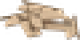
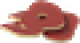
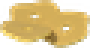
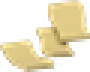
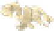
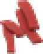
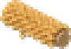
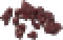
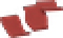
the weight of the fresh food, same calories and nutrients
before it goes stale. Mushrooms keep a year
Cooking for every dried food you collect
to eat as they are, or in stews, soups, salads and pies
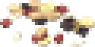
+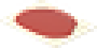
›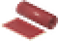
Trail Mix and Fruit Leather
3 dried fruit and a handful of nuts or seeds make a Trail Mix that cheers you up. Mash 3 ripe fruit in a bowl and dry it 3 days for Fruit Leather.
 ›
›Jerky from Butchery
Make Jerky gives Salted Meat Strips. Dry them 2 days on a rack, faster in a dehydrator, or in Dazed Plumbing's smoker.
Weather, with Dazed Climate
Hardcore option, off by default: rain spoils food left on a rack. Without Climate, racks dry at a fixed speed.
Dazed Butchery
Adds its cuts, grades, portioning and jerky to dry. Vanilla meat works without it.
Dazed Climate
Hot food warms you, and the weather speeds or pauses outdoor racks.
Dazed Power and Plumbing
The dehydrator runs on Power. Plumbing's smoker smokes cuts and dries jerky.
Builds on the game's own cooking, evolved recipes and timed actions. The window does nothing while it is closed.